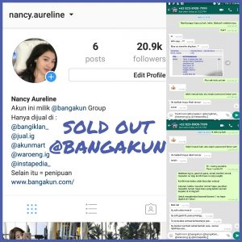
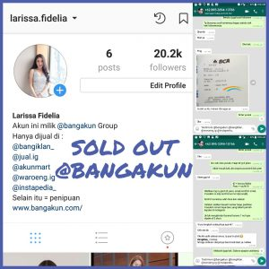
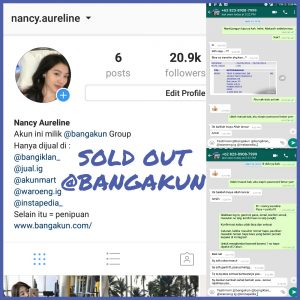
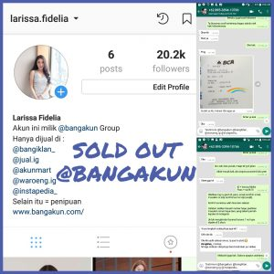

ALUR TRANSAKSI PEMBELIAN AKUN INSTAGRAM
- Kontak Admin di LINE / WA
- Pilih Akun
- Transfer Banking (kirim bukti transfer)
- Pengecekan Oleh Admin
- Uang masuk langsung diberikan ID, Password, email dan password email.
Proses cepat, paling lama 2 menit. Setelah akun bisa Log In, silahkan
diganti ID, Password, Email, dan No. Telpon.
|
PERTANYAAN YANG SERING DITANYAKAN
Q : Adakah akun dengan followers mayoritas cewek?
A : Hampir tidak pernah ada orang yang menjual akun dengan
followers mayoritas cewek. Kenapa?
1.Karena susah untuk mendapatkam followers cewek.
2.Cewe paling males ngefollow akun gak jelas.
Q : Kenapa gak bikin akun cowok ganteng biar dapatin followers
cewek?
A : Sudah banyak yang mencoba bikin akun cowok ganteng, kebanyakan
followersnya juga cowo lagi (gay).
Q : Adakah jual akun bekas Olshop?
A : Gak ada yang jual akun olshop, kecuali :
1. Olshop dadakan, bekas akun lain dijadikan olshop saat mau
dijual.
2. Olshop gak laku. Karena dagangannya gak laku, akunnya
dijual aja deh.
Q : Aku nyari akun bekas olshop biar dapatin pelanggan dari
olshop sebelumnya kak. Ada?
A : Pelanggan gak bisa dibeli kak, toh dagangan kalian beda.
Laku atau gaknya dagangan kakak tergantung kualitas barang
dan permintaan pasar kak.
Ada gak enaknnya beli akun bekas olshop itupun jika ada ketemu
yang jual.
1.Followers gak aktif, karena sebagian besar yang follow
olshop bukan akun utama.
2.Orang males follow olshop soalnya nyampah di timeline.
Follow olshop pake akun lain aja, dibukanya pas lagi cari
barang aja.
Untuk memulai olshop lebih enak pakai akun pribadi. Kenapa?
Karena followersnya aktif, dagangan kita dilihat orang, kalau
dagangannya bagus di likes, atau bisa mereka beli.
Q : Apakah likes akunnya tetap sama setelah akunnya dirubah?
A : PASTI berubah. Akun kita 100% real followers dan real likes
kak. Yang follow dan likes orang beneran, jadi setelah nanti
akunnya berubah likesnya juga pasti berubah. Likes nantinya
tergantung mereka suka atau gak postingan kakak.
Q : Apakah followersnya akan berkurang setelah akunnya berubah?
A : Belum tentu. Jika akunnya dijadikan akun pribadi
cewek, kemungkinan besar followersnya akan terus bertambah.
Akan tetapi, jika akunnya dijadikan olshop biasanya
followersnya akan berkurang. Biasanya followersnya gak akan
berkurang banyak. Apabila berkurang banyak (>20%), bisa klaim
garansi ganti dengan akun baru dengan jumlah followers yang sama.
Pengurangan Followers ini terjadi karena mereka pasti kaget
tiba-tiba ngefollow akun gak dikenal.
Berbeda dengan akun dengan Fake Followers / BOT Followers
yang pengurangan followersnya bisa mencapai 100% dalam
hitungan hari. Kenapa? Karena Instagram secara rutin nge-BAN
Fake Followers dan BOT Followers.
|
 


